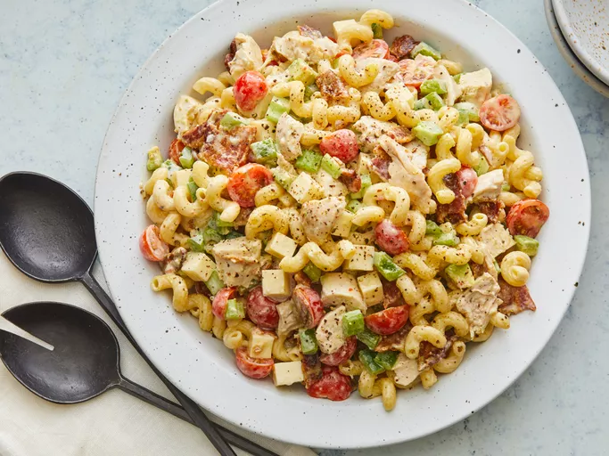

Club Chicken Pasta Salad
Home

Club Chicken Pasta Salad
This chicken pasta salad with crispy bacon, tomatoes and lots of cooked chicken has all the flavours
of a chicken club sandwich. Delicious!
Ingredients
- 8 ounces corkscrew-shaped pasta
- 3/4 cup italian-style salad dressing or to taste
- ¼ cup mayonnaise
- 2 cups chopped, cooked rotisserie chicken
- 12 slices crispy cooked bacon, crumbled
- 8 ounces cherry tomatoes, halved
- 1 cup cubed Muenster/Monterey Jack Cheese/Feta cheese
- 1 cup chopped celery
- 1 cup chopped green bell pepper
- 1 avocado - peeled, pitted and chopped
Steps
- Gather all the ingredients
- Bring a large pot of slightly salted water to boil. Cook pasta in the boiling water, stirring
occasionally, until tender, yet firm to the bite. Takes 10 - 12 minute to achieve this. Drain
and rinse under cold water.
- Whisk Italian-style dressing and mayonnaise together in a large bowl.
- Stir in pasta, chicken, bacon, tomatoes, cheese, celery, green bell pepper and avocado until
evenly cooked.
- Enjoy!